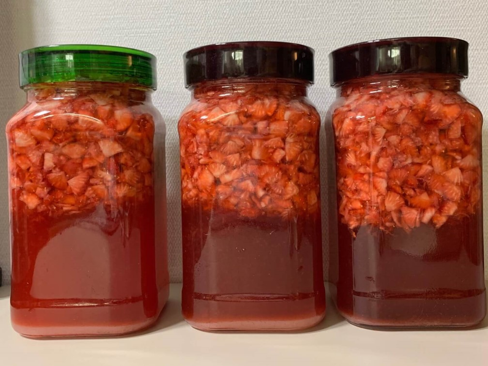

- 재료 준비 ※ 1kg 기준
- 딸기 세척 / 건조
- 용기 소독 / 건조
- 딸기 썰기
- 설탕 넣기 / 섞기 / 레몬즙 넣기
- 용기에 옮기기
< 딸기라떼 만들기 >
준비물 : 딸기 1kg, 설탕 1kg, 용기 1.5L, 레몬즙(선택)
시장에서 싱싱한 딸기를 구입했어요!
그리고 여러분들은 소중하니까 당의 흡수를 줄인 자일로스 설탕을 샀어요!
굉장히 크죠?
그리고 딸기청을 보관할 용기도 샀답니다!
딸기를 구입했으니 이제 깨끗하게 씻어야겠죠?
식초물을 이용하여 더 깨끗하게 세척하였답니다!
딸기를 자르고 씻는 민지와 민지의 친구 코코의 모습이에요!
이때 딸기 씻기의 골든 타임인 30초를 꼭 지켜줘야해요!안지켜주면 비타민, 당분이 많이 빠져나간다는 얘기가...
딸기가 마르지 않은 채로 청을 담으면 후에 곰팡이가 생길 수 있데요!
그래서 딸기 세척후 꼭 말려주어야 합니다!

딸기를 건조시키기 위해 그릇에 정렬하고, 건조시키는 모습이에요!
용기를 제대로 소독하지 않으면 곰팡이가 나중에 필 수 있어요!
그래서 열탕 소독을 진행합니다!
다이소에서 산 용기는 원래는 열탕 소독이 불가능하기 때문에 끓는 물에 넣으면 용기가 터져버려요.
그래서 찬물에서부터 용기를 넣고 소독을 시작해야합니다.
용기 입구부분 정도까지만 차오르게 물을 넣어주면 된답니다!

이렇게 용기 위쪽에서 수증기가 뚝! 떨어질 정도까지 끓여서 소독해주면 됩니다!
소독 완료한 용기는 이렇게 세워서 말려줘야한데요!
용기 뚜껑도 소독해주는 것 잊지 마세요!
이제 원하는 크기로 딸기를 썰어줍니다!
원하는 크기란 딸기청을 먹을 때 얼마정도로 딸기가 씹히면 좋겠냐하는 거에요!
이제 설탕을 넣어줍니다!
양은 딸기보다 100~200g 적게 넣어주면 되는 것 같아요.
이건 취향차이라서 1:1의 비율로 넣는 분들도 계시는데 저렇게 넣어도 충분히 맛있어요!
그리고 레몬즙을 한스푼정도 넣어줍니다. 필수는 아니에요!
그 이유는 레몬즙을 넣으면 색깔이 더 예쁘게 보존된데요!
그리고 딸기와 설탕을 열심히 잘 섞어줍니다!
열심히 섞은 딸기와 설탕을 용기에 옮겨줍니다.
이건 딸기 썰기에서부터 용기에 옮기기의 과정을 타임랩스로 담은 영상이에요!
짜잔 완성되었어요!

맛있겠다....